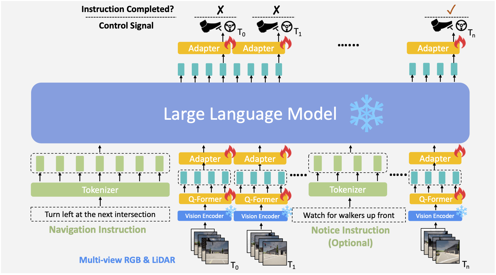
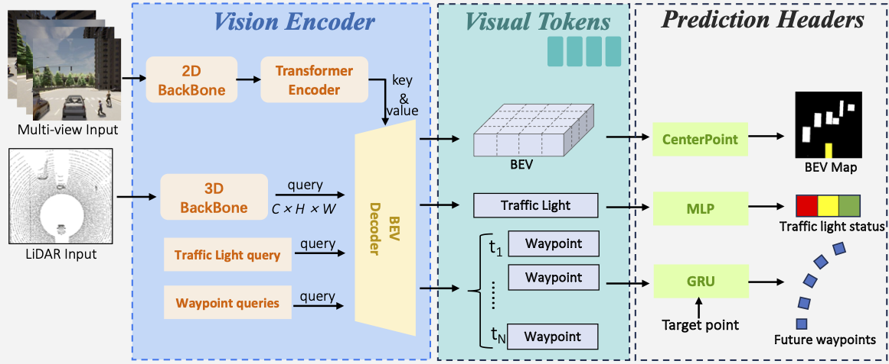

Pipeline
Pipeline
The structure of the proposed LMDrive model, which consists of two major components:
- A vision encoder that processes multi-view multi-modal sensor data (camera and LiDAR) for scene understanding and generating visual tokens.
- A large language model and its associated component (tokenizer, Q-Former, and adapters) that processes all the historic visual tokens and the language instructions (navigation instruction and optional notice instruction), to predict the control signal and whether the given instruction is completed.

The detailed structure of the vision encoder, which takes as input the multi-view multi-modality sensor data:
- In the pre-training stage, the vision encoder is appended with prediction headers to perform pre-training tasks (object detection, traffic light status classification, and future waypoint prediction).
- In the instruction-finetuning stage and inference stage, the prediction headers are discarded, and the vision encoder is frozen to generate visual tokens to feed into the LLM.
